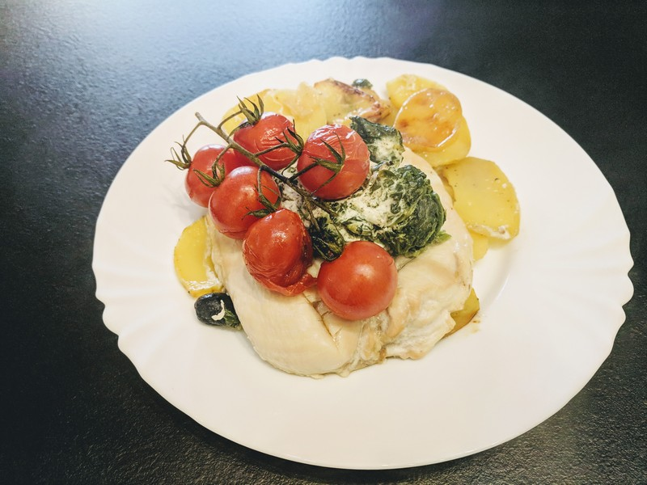

Byť v kuchyni stále vyznávám rychlovky hotové do pár minut, když mám o víkendu čas, ráda otestuju nějaký “slavnostnější” recept. Tak jsem z jednoho staršího čísla Albert magazínu vytáhla návod na tohle kuře, které nám zachutnalo natolik, že ho asi zařadíme mezi naše kulinářské stálice.
- 1 velká cibule, přepůlená, tence pokrájená
- 85 g krémového smetanového sýra
- 200 g nasekaného listového špenátu (mraženého)
- muškátový oříšek, sůl, pepř
- 4 kuřecí prsní řízky
- 4 větvičky cherry rajčat
- 550 g brambor, tence pokrájených na plátky
- 4 stroužky česneku, na plátky
- olivy bez pecky
- 1 lžíce olivového oleje
Troubu předehřejeme na 200°C a plech vyložíme pečicím papírem. Cibulu dáme do mísy a přelijeme ji vroucí vodou, aby byla potopená. Necháme stát 15 minut. Mezitím smícháme sýr, špenát, větší špetku muškátového oříšku a hodně pepře v míse. Pak směsí zakryjeme vršky osoleného kuřecího masa a navrch posadíme po větvičce cherry rajčat.
Scedíme nakrájenou cibuli, důkladně ji osušíme a promícháme ji opatrně s plátky brambor, česnekem, olivami, olejem a pepřem. Ze směsi vytvoříme na pečicím papíře čtyři “ostrovy”, lehce je přimáčkneme a dáme na 25 minut péct. Poté na každý ostrov dáme po jednom kuřecím řízku a pečeme dalších 20-30 minut.
A tady je výsledek :-)
